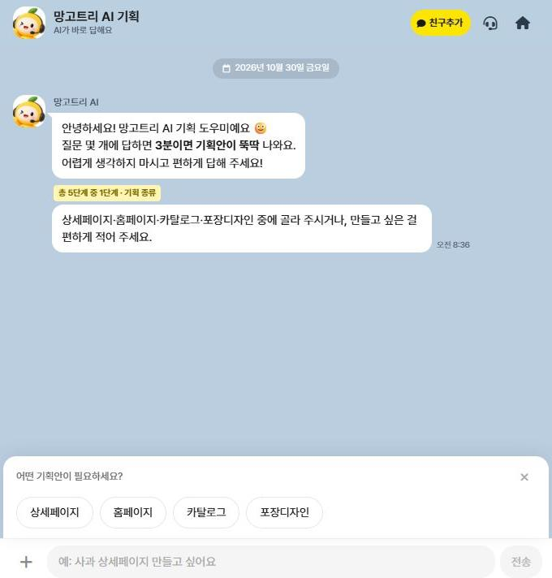
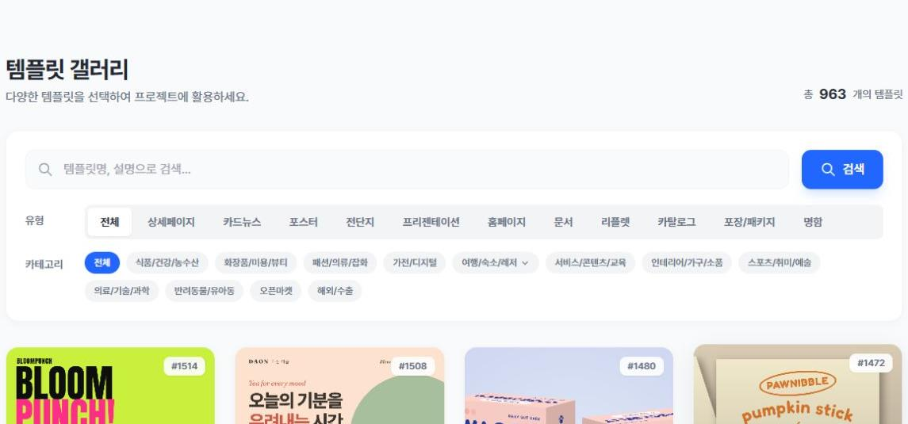
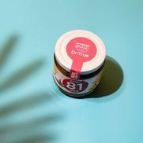
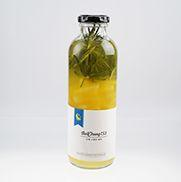

COMPARE
한눈에 비교하는
6가지 AI 제품
-
01
AI COMMERCE쇼핑 경험
- 검색
- 추천
- 요약
- 상담
- 개인화
-
02
AI CREATIVE콘텐츠 제작
- 이미지
- 상세
- 영상
- SNS 생성
-
03
AI AGENT승인 후 실행
- 상담
- 영업
- 마케팅
- 상품관리
-
04
AI INSIGHT데이터 분석
- 매출
- 고객
- 광고
- 상품 분석
-
05
AI FLOW업무 자동화
- 콘텐츠
- CRM
- 보고서 자동화
-
06
AI GROWTH성장 마케팅
- 광고
- SEO
- 캠페인 최적화
HOW IT WORKS
제품별 활용 방식
제품이 어떤 일을 맡는지 설명하는 개념 소개입니다. 실제 적용 범위는 진단과 상담에서 정합니다.
- AI COMMERCE
찾고 고르는 과정을 돕기
자연어 검색, 개인화 추천, AI 상담을 쇼핑몰에 붙여 고객이 상품을 찾고 비교하는 과정을 돕습니다. 어디에 붙일지는 쇼핑몰 구조를 보고 정합니다.
- 자연어 검색
- 개인화 추천
- AI 상담
- AI INSIGHT
데이터 분석
매출·고객·광고 데이터를 한 화면에서 분석하고, AI가 지금 해야 할 액션을 제안합니다.
- 매출 분석
- 이탈 탐지
- 액션 제안
- AI FLOW
반복 업무 자동화
정기 리포트 작성, 고객 메시지 예약 발송처럼 정해진 반복 업무를 자동화합니다. 발송·집행 전에는 담당자가 확인합니다.
- 리포트
- CRM
- 캠페인
AI CREATIVE · WORKFLOW
콘텐츠를 만드는 과정,
실제 도구 화면으로
도구를 단계별로 이어 쓰는 흐름입니다. 단계 사이가 자동으로 연결되는 기능은 아니며, 화면은 고객 실적이나 AI 자동 실행 결과가 아닙니다.

01 기획 입력
망고트리 AI 기획에서 만들 것(상세페이지·홈페이지·카탈로그·포장디자인)을 고르고, 질문에 차례로 답하며 기획 방향을 정리합니다.
다음 → 템플릿 고르기

02 템플릿 고르기
페이지메이커 템플릿 갤러리에서 유형(상세페이지·카드뉴스·포스터 등)과 업종으로 템플릿을 찾아 고릅니다.
다음 → AI로 소재 만들기

03 AI로 소재 만들기
페이지메이커 AI 이미지 화면에 원하는 내용을 적어 상세페이지·배너·카드뉴스 등의 소재를 만들고, 담당자가 다듬습니다.
다음 → 링크 만들어 알리기
- 04
만든 다음에는
완성한 상세페이지·소재를 링크로 알리고 실적을 확인하는 단계까지, 전체 흐름은 메인에서 이어서 볼 수 있습니다.
전체 흐름 보기 →
CONTENT
콘텐츠 제작 예시
상품 컷·연출 컷·패키지 컷 등 커머스에 필요한 촬영·제작 결과물의 예시입니다.
푸드 스타일링 
패키지 컷 연출 컷 상품 컷 누끼 컷 
디테일 컷
AI AGENT
찾고, 제안하고,
승인 뒤에 실행합니다
AI가 지표에서 살펴볼 상품을 찾고 원인과 개선안을 정리하면, 담당자가 확인하고 승인한 작업만 실행합니다. 광고·캠페인 집행을 AI가 혼자 결정하지 않으며, 연동 범위는 도입 환경에 따라 정합니다.
- 01매출 감소 상품 탐지
- 02원인 분석
- 03개선안 제안 · 소재 초안
- 04담당자 승인 후 실행
무엇부터 바꿀지,
진단으로 시작하세요.
무료 AI 진단으로 우리 비즈니스에 맞는 도입 전략을 확인하세요.